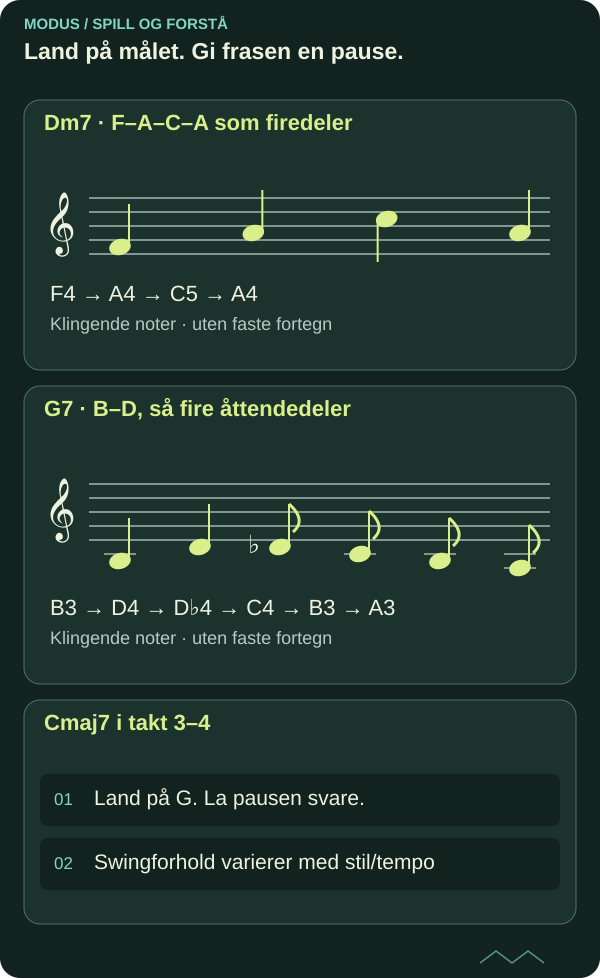

Swing og bebop: rytmisk retning over akkordskifter
Jazzfrasering handler om plassering, artikulasjon og harmonisk respons. Begynn med en kort egen linje og la lytting styre detaljene.
DETTE LÆRER DU
Swing og bebop: rytmisk retning over akkordskifter
- Variere åttendedelsplassering uten fast mekanisk swingforhold.
- Bruke kromatisk tilnærming til akkordtone.

Swing er en praksis, ikke ett tall
Swingåttendedeler er ofte ulikt lange, men forholdet varierer med tempo, stil og utøver. En triolmodell kan hjelpe ved moderat tempo, men er ikke en universell fasit. Artikulasjon, betoning og plassering mot pulsen er like viktige.
Lytt til et lovlig tilgjengelig kort repertoarutdrag og syng rytmen uten instrument. Merk hvilke toner som får vekt, og hvor frasen begynner og slutter i forhold til takten. Skriv observasjoner før du prøver å imitere dem.

Les diagrammet som tekst
- Dm7 · F–A–C–A som firedeler: F4 → A4 → C5 → A4
- G7 · B–D, så fire åttendedeler: B3 → D4 → D♭4 → C4 → B3 → A3
- Cmaj7 i takt 3–4: Land på G. La pausen svare.; Swingforhold varierer med stil/tempo
En egen linje gjennom ii–V–I
Bruk Dm7 i én takt, G7 i én og Cmaj7 i to. Spill F–A–C–A som firedeler i første takt. I andre spiller du B–D som firedeler, deretter D♭–C–B–A som åttendedeler. Land på G i tredje takt og gi frasen pause.
Linjen viser akkordtoner og en kromatisk bevegelse innenfor G7-takten. Lag en annen slutt der B–D♭ omslutter C ved målskiftet. En enclosure er en innramming av en måltone fra over og under; de konkrete tonene og rytmen må tilpasses harmonien.
Piano og gitar: komp, linje, respons
På piano spiller du bare bass på slag 1 og guide-toner som støtte. Syng linjen mens du kjenner firedelspulsen. På gitar finner du F–A–C i ett lite register og spiller samme frase med først jevne og så varierte åttendedeler. Ikke øk tempo før plassering og artikulasjon er hørbar.
Bruk metronom på alle firedeler først, og deretter på 2 og 4 når pulsen holder. Et klikksystem er et kontrollverktøy, ikke en full jazzrytmeseksjon. Sammenlign med samspill eller et relevant komp når det er mulig.
Bygg en liten språkstudie
Skriv tre kor på en egen åttetakters akkordplan. Første kor bruker bare akkordtoner, andre legger til kromatiske tilnærminger, tredje utvikler ett motiv med pauser. Ta opp alle og noter konkrete steder med god eller uklar landing.
Bruk et standardrepertoar du har lovlig tilgang til som senere overføringsoppgave. Oppgi verk, innspilling og tidskode i din private arbeidsjournal; denne artikkelen gjengir ingen beskyttet transkripsjon. Skriftlig forståelse av bebopbegrep dokumenterer ikke idiomatisk spill. Lyd og faktisk lytting må vurderes separat.
Kildegrunnlag og faglig status
Original norsk MODUS-tekst med egne undervisningseksempler. Faglig referansegrunnlag for videre kontroll:
Under arbeid – ikke faglig sluttgodkjent. Artikkelen dokumenterer ingen personlig mestring og gir ingen formell studie- eller publiseringsgodkjenning. Skriftlig forklaring, faktisk spill og lytting må vurderes hver for seg.
FRA LESING TIL SPILLING
Prøv det selv.
Ta opp tre åttetakters kor med ulik begrensning. Lever egen notert frase, to kromatiske tilnærminger og refleksjon om timing og artikulasjon.
- Gjør et selvstendig første forsøk før du ser quizfasiten.
- Spill den konkrete modellen på gitar og piano, og lytt til forskjellen.
- Lag en ny variant og behold første og bearbeidede versjon separat.
SJEKK FORSTÅELSEN
Hva sitter igjen?
Tre spørsmål om det du har lest. Alle tre riktige gir fullført quiz. Du kan prøve så mange ganger du vil.
Fullføring lagres i denne nettleseren og deles mellom norsk og engelsk.
Du har svart riktig på alle tre spørsmålene. Ta ideen med til instrumentet.
Til artikkelbiblioteket ↗︎ANBEFALT NESTE STEG
Comping og akkordmelodi: støtt frasen med få toner
Neste del av den foreslåtte faglige ruten. Velg emner ut fra forkunnskap og behov.
Comping og akkordmelodi: støtt frasen med få toner ↗︎